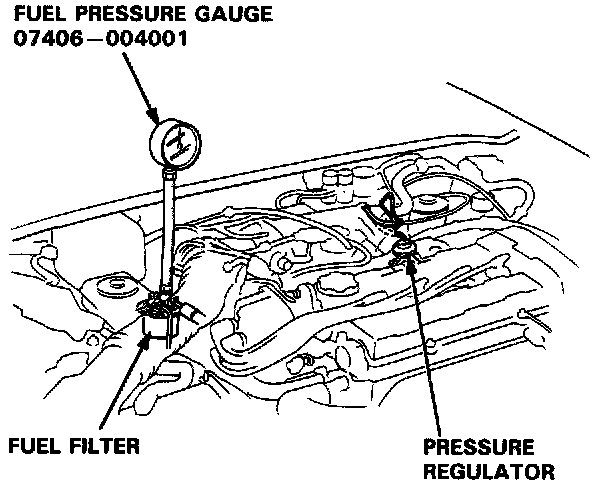

Fuel Pressure Regulator: Testing and Inspection

Pressure Regulator Testing
WARNING: Do not smoke during the test. Keep open flames away from your work area.
1. Attach a pressure gauge to the service port of the fuel filter.
Pressure should be:
B18B1 engine:
290 - 340 kPa (2.9 - 3.4 kg/cm2, 41 - 48 psi)
B17A1 engine:
340 - 390 kPa (3.4 - 3.9 kg/cm2, 48 - 56 psi)
(with the regulator vacuum hose disconnected)
2. Reconnect the vacuum hose to the pressure regulator.
3. Check that the fuel pressure rises when the vacuum hose from the regulator is disconnected again.
- If the fuel pressure does not rise, replace the pressure regulator.